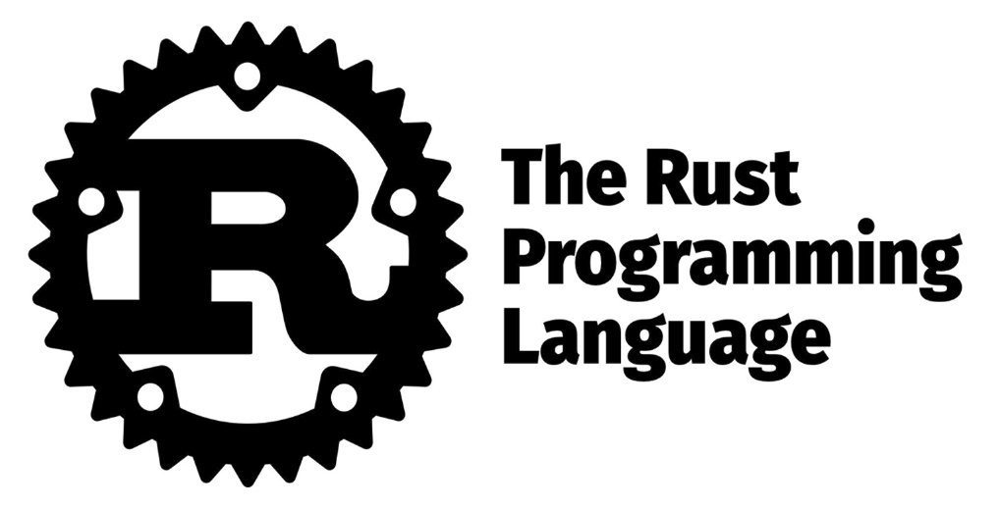

¿Qué es Rust?
Rust aspira a ser el lenguaje de programación escogido a la hora de crear programas tando en el lado del cliente como del servidor.
Se actualiza constantemente gracias a la ayuda de la comunidad, tanto en colaboraciones como en opiniones.
Visite el sitio oficial de Rust aquí.
Cualidades de Rust
Lenguaje de programación compilado, general-purpose y multiparadigma con programación funcional pura, procedures, imperativa y OOP.
Es uno de los lenguajes de programación más usados gracias a su capacidad de trabajo con criptomonedas y de crear nodos.
Paradigmas
Rust es un lenguaje multiparadigma, descúbrelos aquí.
Comunidad y Rust
Su desarrollo tiene fuertes influencias de la comunidad gracias a las opiniones y colaboraciones de esta.
Se perfecciona su diseño gracias a las experinecias del motor de navegador Servo y RustC, el compilador propio de Rust.
Sé uno de nosotros y aprende Rust
fn main() {
println!("¡Hola, mundo!");
}
Descubre todas las maneras en las que puedes aprender Rust aquí.
Historia de Rust
La primera versión estable, la 1.0, se publicó el 15 de mayo de 2015 pero hubo mucha antes de su lanzamiento y mucha más vino después. Aprende el desarrollo de este lenguaje de programación tan querido aquí.